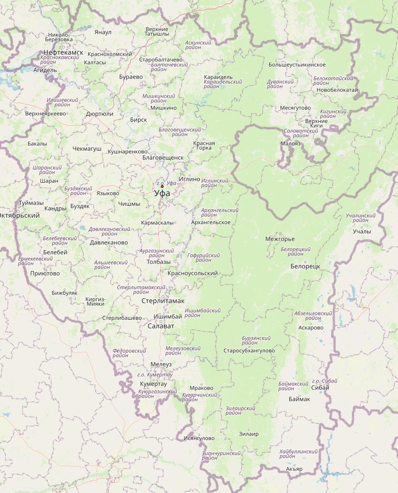

1
2
3
4
5
6
7
8
9
10
11
12
13
14
15
16
17
18
19
20
21
22
23
24
25
Легенда:
Горы
Реки и озёра
Достопримечательности
👈 Нажмите на точку на карте, чтобы узнать о месте
← Назад
Вперёд →
🌼 Гид по Башкирии 🏔️
Гид:
Здравствуйте! Я ваш гид по Башкирии. Нажмите на точку на карте, чтобы увидеть информацию или задайте вопрос в чате. Я расскажу о растениях, животных, легендах и достопримечательностях Башкирии.